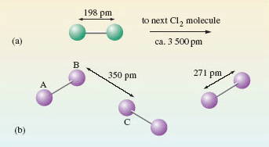
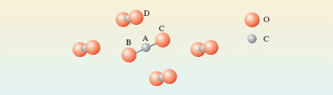

1.2 Molecular substances
Imagine a chemist handed you a glass stoppered flask containing what appeared to a yellow gas and told you that this was chlorine. You might initially be a little worried recalling that chlorine is extremely toxic, but given you now know about atoms and have been introduced to the sub microscopic world of chemistry you might start to think about what’s going on at this scale.
What actually is chlorine?
Knowing that chlorine has the symbol Cl, your first thought might (quite reasonably) be that chlorine gas is composed of single atoms.
But this isn’t the case.
Chlorine gas actually consists of chlorine atoms joined together in pairs to form molecules.
These have the formula Cl2.
And rather confusingly both the atoms and the molecules are referred to by chemists as chlorine.
A gas, like chlorine, occupies much more space than a solid or liquid, so the distance between the molecules is comparatively large. At normal temperatures pressures, and measuring distances in picometeres (pm), where 1pm ≡ 10-12m, the distance between chlorine molecules averages about 3500pm. This is compared with a distance of only 198pm separating the chlorine atoms in the actual Cl2 molecules, and is illustrated in Figure 1(a), where the green/grey spheres represents chlorine atoms.
In other words the distance between the atoms in the chlorine molecule is small compared with the average distance between the molecules in a jar of chlorine gas. This disparity is less extreme, but still evident in liquid bromine and solid iodine, which are in the same group of the periodic table as chlorine.

Turning now to iodine – a solid at room temperature.
The positions of atoms in solids may be worked out using a technique called X-ray crystallography, the results of which ae shown for iodine in Figure 1b.
I2 molecules (labelled AB) which can be identified through their separation by a distance of 271 pm. These molecules are separated by longer distances of at least 350 pm (BC)
So the iodine atoms can be grouped into pairs; and the logical conclusion is that (like chlorine) solid iodine consists of I2 molecules.
Similar reasoning can be used to identify molecules in chemical compounds.
Take for example carbon dioxide (CO2).
At room temperature carbon dioxide is a gas containing CO2 molecules, but on cooling it becomes a solid (“dry-ice”).
In dry ice each carbon atom has two oxygen atom neighbours at a distance of 116pm – these atoms are arranged in a straight line. The next nearest atom is another oxygen at 311pm. So here is the evidence that solid carbon dioxide contains linear CO2 molecules, with the atom sequence O-C-O. This is shown in Figure 2. Note the colour coding of the spheres. Molecule BAC is in the plane of the paper; the other four molecules shown are not.

Dry ice has some interesting properties – some of these are illustrated in the following video.
OpenLearn - Discovering chemistry
 Except for third party materials and otherwise, this content is made available under a Creative Commons Attribution-NonCommercial-ShareAlike 4.0 Licence, full copyright detail can be found in the acknowledgements section. Please see full copyright statement for details.
Except for third party materials and otherwise, this content is made available under a Creative Commons Attribution-NonCommercial-ShareAlike 4.0 Licence, full copyright detail can be found in the acknowledgements section. Please see full copyright statement for details.